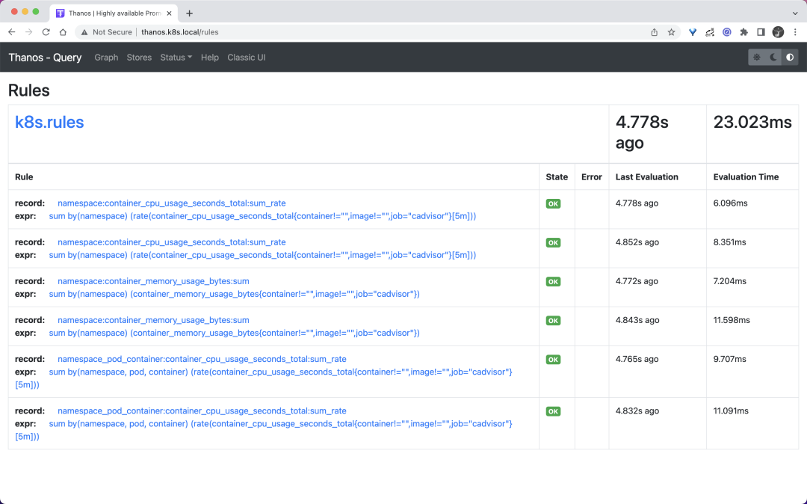
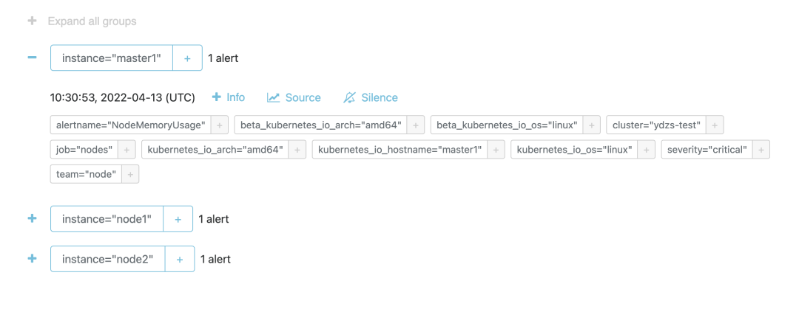

第九节（2022）Thanos Ruler组件的使用
Thano Ruler 组件是用于评估 Prometheus 的记录规则和报警规则的组件，其本身不会抓取 metrics 接口数据，而是通过 Query API 从 query 组件定期地获取指标数据，如果配置了多个 query 地址，则会采用轮询方式获取。
其中记录规则评估生成的数据会保存在本地，并且定期地扫描本地生成的 TSDB 数据块上传到对象存储桶中作为历史数据长期保存。同时也实现了 Store API 可用于查询本地保存的数据。与 Prometheus 节点类似，每个 ruler 节点都使用独立的存储，可以同时运行多个副本，而且需要为每个副本实例分配不同的标签以作区分，因为 store 组件在查询对象存储中的历史数据时是以该标签进行分组查询的。
1 安装
由于 ruler 组件也实现了 Store API，所以我们也可以直接将该组件对接到 store 组件中去，只需要给创建的 Pod 带上 thanos-store-api: "true" 这个标签即可（Service 会进行自动关联）被 query 组件服务发现。
整体上我们可以把 ruler 节点理解为一个简单的 Prometheus 节点，只是不需要 thanos sidecar，不抓取指标数据，只负责执行 PromQL 查询，由于本身会保留独立的存储，所以同样这里我们需要做数据的持久化。
然后可以通过部署两个副本来实现高可用，
- 这里我们添加了一个
--label=rule_replica标签来给数据添加一个rule_replica的标签, - 同时指定
--alert.label-drop为rule_replica，这样在触发告警发送通知给 AlertManager 时可以去掉这个 label，以便让 AlertManager 自动去重，可以避免重复告警。
然后通过 --query 参数指定 query 组件地址，我们这里还是使用 DNS SRV 来做服务发现，这样就可以从查询组件中获取指标数据了。
ruler 同样也需要对象存储的配置，用于上传计算出的数据到对象存储，所以要挂载对象存储的配置文件。--rule-file 参数可以用来指定挂载的 rule 配置，ruler 组件会根据配置来生成数据和触发报警。
完整的资源清单文件如下所示：
# thanos-ruler.yaml
apiVersion: apps/v1
kind: StatefulSet
metadata:
name: thanos-ruler
namespace: kube-mon
labels:
app: thanos-ruler
spec:
replicas: 2
selector:
matchLabels:
app: thanos-ruler
serviceName: thanos-rule
podManagementPolicy: Parallel
template:
metadata:
labels:
app: thanos-ruler
thanos-store-api: "true"
spec:
affinity:
podAntiAffinity:
preferredDuringSchedulingIgnoredDuringExecution:
- weight: 100
podAffinityTerm:
topologyKey: kubernetes.io/hostname
labelSelector:
matchExpressions:
- key: app
operator: In
values:
- thanos-ruler
containers:
- name: thanos-ruler
image: thanosio/thanos:v0.25.1
args:
- rule
- --grpc-address=0.0.0.0:10901
- --http-address=0.0.0.0:10902
- --rule-file=/etc/thanos/rules/*rules.yaml
- --objstore.config-file=/etc/secret/thanos.yaml
- --data-dir=/var/thanos/rule
- --label=rule_replica="$(NAME)"
- --alert.label-drop=rule_replica
- --query=dnssrv+_http._tcp.thanos-querier.kube-mon.svc.cluster.local
ports:
- containerPort: 10901
name: grpc
- containerPort: 10902
name: http
env:
- name: NAME
valueFrom:
fieldRef:
fieldPath: metadata.name
livenessProbe:
httpGet:
path: /-/healthy
port: 10902
scheme: HTTP
readinessProbe:
httpGet:
path: /-/ready
port: 10902
scheme: HTTP
volumeMounts:
- mountPath: /var/thanos/rule
name: data
readOnly: false
- name: object-storage-config
mountPath: /etc/secret
readOnly: false
- name: thanos-rules
mountPath: /etc/thanos/rules
volumes:
- name: object-storage-config
secret:
secretName: thanos-objectstorage
- name: thanos-rules
configMap:
name: thanos-rules
volumeClaimTemplates:
- metadata:
name: data
spec:
accessModes:
- ReadWriteOnce
storageClassName: longhorn
resources:
requests:
storage: 1Gi
要注意上面挂载的对象存储配置的 Secret，另外还需要通过一个 ConfigMap 来配置 rules 规则：
# thanos-rules-config.yaml
apiVersion: v1
kind: ConfigMap
metadata:
name: thanos-rules
namespace: kube-mon
data:
record.rules.yaml: |-
groups:
- name: k8s.rules
rules:
- expr: |
sum(rate(container_cpu_usage_seconds_total{job="cadvisor", image!="", container!=""}[5m])) by (namespace)
record: namespace:container_cpu_usage_seconds_total:sum_rate
- expr: |
sum(container_memory_usage_bytes{job="cadvisor", image!="", container!=""}) by (namespace)
record: namespace:container_memory_usage_bytes:sum
- expr: |
sum by (namespace, pod, container) (
rate(container_cpu_usage_seconds_total{job="cadvisor", image!="", container!=""}[5m])
)
record: namespace_pod_container:container_cpu_usage_seconds_total:sum_rate
这里我们简单配置了几个记录规则，配置方式和之前的规则一样的。然后直接创建上面的资源对象即可：
☸ ➜ kubectl apply -f https://p8s.io/docs/thanos/manifests/thanos-rules-config-0.yaml
☸ ➜ kubectl apply -f https://p8s.io/docs/thanos/manifests/thanos-ruler-0.yaml
☸ ➜ kubectl get pods -n kube-mon -l app=thanos-ruler
NAME READY STATUS RESTARTS AGE
thanos-ruler-0 1/1 Running 0 16m
thanos-ruler-1 1/1 Running 0 16m
部署完成后我们可以去查看 query 组件页面的 store 信息是否包含上面的 ruler 实例：

同样在 rules 页面可以看到我们定义的记录规则信息：

现在我们可以尝试去查询下上面的记录规则，比如查询
namespace:container_cpu_usage_seconds_total:sum_rate：

可以看到可以正常获取到这条记录规则的数据。
2 对接告警
如果要进行报警，首先我们需要通过启动参数 --alertmanagers.url 来指定 Alertmanager 的地址，如果需要更高级的配置，可以通过启动参数 --alertmanagers.config 或者 --alertmanagers.config-file 来指定对接 Alertmanager 的配置，格式如下所示：
alertmanagers:
- http_config:
basic_auth:
username: ""
password: ""
password_file: ""
bearer_token: ""
bearer_token_file: ""
proxy_url: ""
tls_config:
ca_file: ""
cert_file: ""
key_file: ""
server_name: ""
insecure_skip_verify: false
static_configs: []
file_sd_configs:
- files: []
refresh_interval: 0s
scheme: http
path_prefix: ""
timeout: 10s
api_version: v1
比如我们这里对接前面章节中的 Alertmanager，则直接这上面的资源对象容器启动参数中增加 - --alertmanagers.url=http://alertmanager:9093 即可。然后在上面的 thanos-rules 的 ConfigMap 中新增一个 alert.rules.yaml 的配置，用来配置报警规则，如下所示：
# thanos-rules-config.yaml
apiVersion: v1
kind: ConfigMap
metadata:
name: thanos-rules
namespace: kube-mon
data:
record.rules.yaml: |-
# ......
alert.rules.yaml: |-
groups:
- name: test-node-mem
rules:
- alert: NodeMemoryUsage
expr: (node_memory_MemTotal_bytes - (node_memory_MemFree_bytes + node_memory_Buffers_bytes + node_memory_Cached_bytes)) / node_memory_MemTotal_bytes * 100 > 30
for: 1m
labels:
team: node
severity: critical
annotations:
summary: "{{$labels.instance}}: High Memory usage detected"
description: "{{$labels.instance}}: Memory usage is above 30% (current value is: {{ $value }})"
直接更新上面的两个资源对象即可：
☸ ➜ kubectl apply -f https://p8s.io/docs/thanos/manifests/thanos-rules-config.yaml
☸ ➜ kubectl apply -f https://p8s.io/docs/thanos/manifests/thanos-ruler.yaml
更新完成后这 query 的 rules 页面也可以看到上面新增的报警规则了，因为我们部署的是两个副本，所以能看到两条一样的规则：

由于我们这 ruler 组件启动参数中配置了参数 - --alert.label-drop=rule_replica，所以 Alertmanager 中不会收到重复报警，不过需要注意的是经测试这里的 rule_replica 不能加引号，加上引号会去重失效，我们可以前往 Alertmanager 查看触发的报警信息：

由于 ruler 组件获取评估数据的路径是 ruler --> query --> sidecar --> prometheus，需要经整个查询链条，这也提升了发生故障的风险，而且评估原本就可以在 Prometheus 中进行，所以在非必要的情况下更加推荐使用原本的 Prometheus 方式来做报警和记录规则的评估。